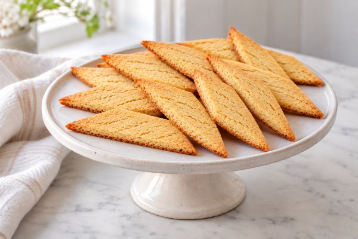

4. Kolasnittar

Kolasnittar är avlånga småkakor som blir lite sega och får smak av sirap och vanilj. De skärs i sneda bitar efter gräddningen.
Ger: cirka 20 kakor.
Ingredienser
- 100 g smör
- 1 dl strösocker
- 2 msk ljus eller mörk sirap
- 2,5 dl vetemjöl
- 1 tsk bakpulver
- 1 tsk vaniljsocker
Gör så här
- Värm ugnen till 175 °C.
- Rör smör, socker och sirap mjukt.
- Blanda mjöl, bakpulver och vaniljsocker.
- Arbeta ihop mjölblandningen med smörblandningen till en deg.
- Dela degen i två delar och rulla ut två längder.
- Lägg längderna på en plåt med bakplåtspapper och platta till dem.
- Grädda i mitten av ugnen i cirka 12 minuter.
- Skär längderna snett i bitar medan de fortfarande är varma.